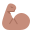

Akhir bukuท้ายเล่ม
Glosari
อภิธานศัพท์
Semua perkataan: 65, disusun mengikut abjadคำศัพท์ทั้งหมด 65 คำ เรียงตามตัวอักษร
| Rumi | Jawi | Maksudความหมาย | Pelajaranบทที่ |
|---|---|---|---|
| พี่น้อง | 4 | ||
| Ahad | احد | วันอาทิตย์ | 3 |
| anak bongsu | ลูกคนสุดท้อง | 4 | |
| anak sulung | ลูกคนโต | 4 | |
| azan | اذان | การอะซาน | 9 |
| baligh | บรรลุศาสนภาวะ | 11 | |
| batuk | ไอ | 7 | |
| بربوک | การละศีลอด | 10 | |
| bersenam | ออกกำลังกาย | 7 | |
| bertanggungjawab | มีความรับผิดชอบ | 11 | |
| bola sepak | ฟุตบอล | 8 | |
| หมากขุม | 8 | ||
| demam | ไข้ | 7 | |
| ผู้ใหญ่ | 11 | ||
| doktor | หมอ | 7 | |
| ครู | 4 | ||
| imam | امام | อิหม่าม | 9 |
| Isnin | اثنين | วันจันทร์ | 3 |
| Jumaat | جمعة | วันศุกร์ | 3 |
| kalah | แพ้ | 8 | |
| เด็ก | 11 | ||
| kedua | ที่สอง | 2 | |
| keempat | ที่สี่ | 2 | |
| kelima | ที่ห้า | 2 | |
| ketiga | ที่สาม | 2 | |
| Khamis | خميس | วันพฤหัสบดี | 3 |
| khatib | خطيب | ผู้แสดงคุฏบะฮ์ | 9 |
| khutbah | خطبه | คุฏบะฮ์ (คำเทศนา) | 9 |
| klinik | คลินิก | 7 | |
| kopiah | کوڤيه | หมวกกปิเยาะห์ | 1 |
| kurma | کورما | อินทผลัม | 10 |
| ผู้ชาย | 11 | ||
| lompat tali | กระโดดเชือก | 8 | |
| ปั่นลูกข่าง | 8 | ||
| เล่นว่าว | 8 | ||
| makmum | مأموم | ผู้ละหมาดตามอิหม่าม | 9 |
| masjid | مسجد | มัสยิด | 1 |
| ชนะ | 8 | ||
| ชาวประมง | 4 | ||
| อาชีพ | 4 | ||
| พ่อค้า แม่ค้า | 4 | ||
| ผู้หญิง | 11 | ||
| permainan | การละเล่น | 8 | |
| pertama | ที่หนึ่ง | 2 | |
| ชาวนา เกษตรกร | 4 | ||
| puasa | ڤواس | การถือศีลอด | 10 |
| Rabu | رابو | วันพุธ | 3 |
| Ramadan | رمضان | เดือนเราะมะฎอน | 10 |
| วัยรุ่น | 11 | ||
| sabar | صبر | อดทน | 10 |
| Sabtu | سبتو | วันเสาร์ | 3 |
| saf | صف | แถวละหมาด | 9 |
| سحور | อาหารซะฮูร | 10 | |
| sakit | ป่วย เจ็บ | 7 | |
| sakit kepala | ปวดศีรษะ | 7 | |
| sakit perut | ปวดท้อง | 7 | |
| sejadah | سجادة | ผ้าละหมาด | 1 |
| sekolah | سکوله | โรงเรียน | 1 |
| Selasa | ثلاث | วันอังคาร | 3 |
| sepak takraw | ตะกร้อ | 8 | |
 sihat | แข็งแรง สุขภาพดี | 7 | |
| solat | صلاة | การละหมาด | 1 |
| tarawih | تراويح | ละหมาดตะรอเวี๊ยะห์ | 10 |
| ubat | ยา | 7 | |
| wajib | วาญิบ จำเป็นต้องทำ | 11 |